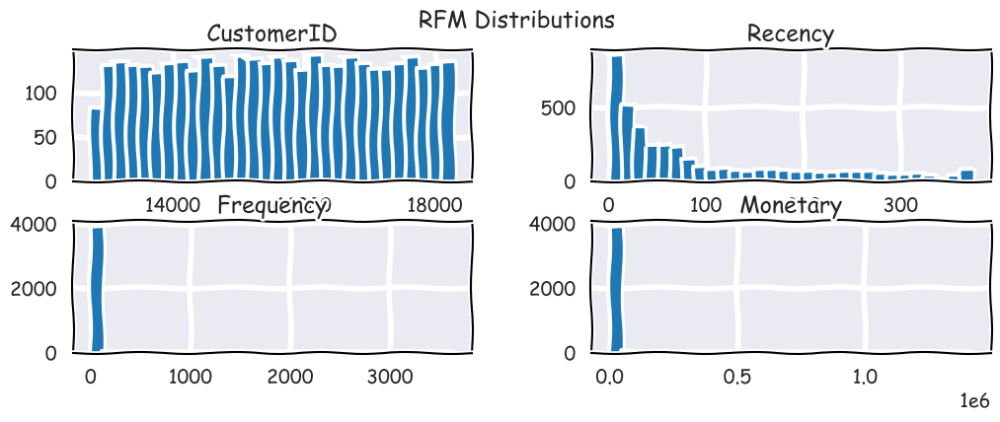
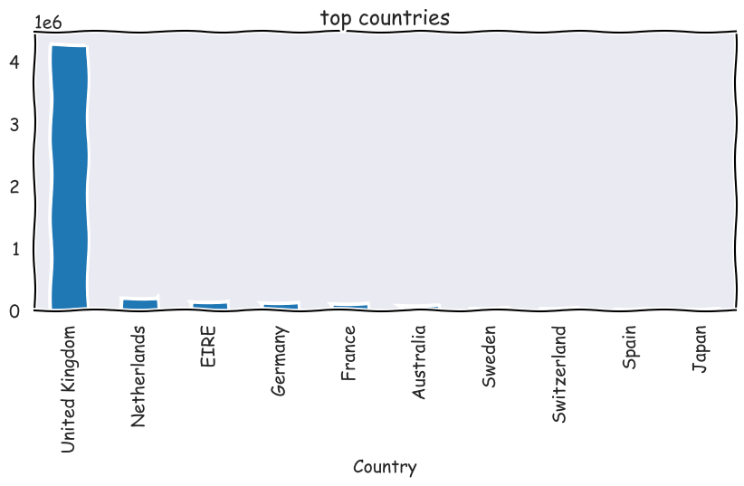
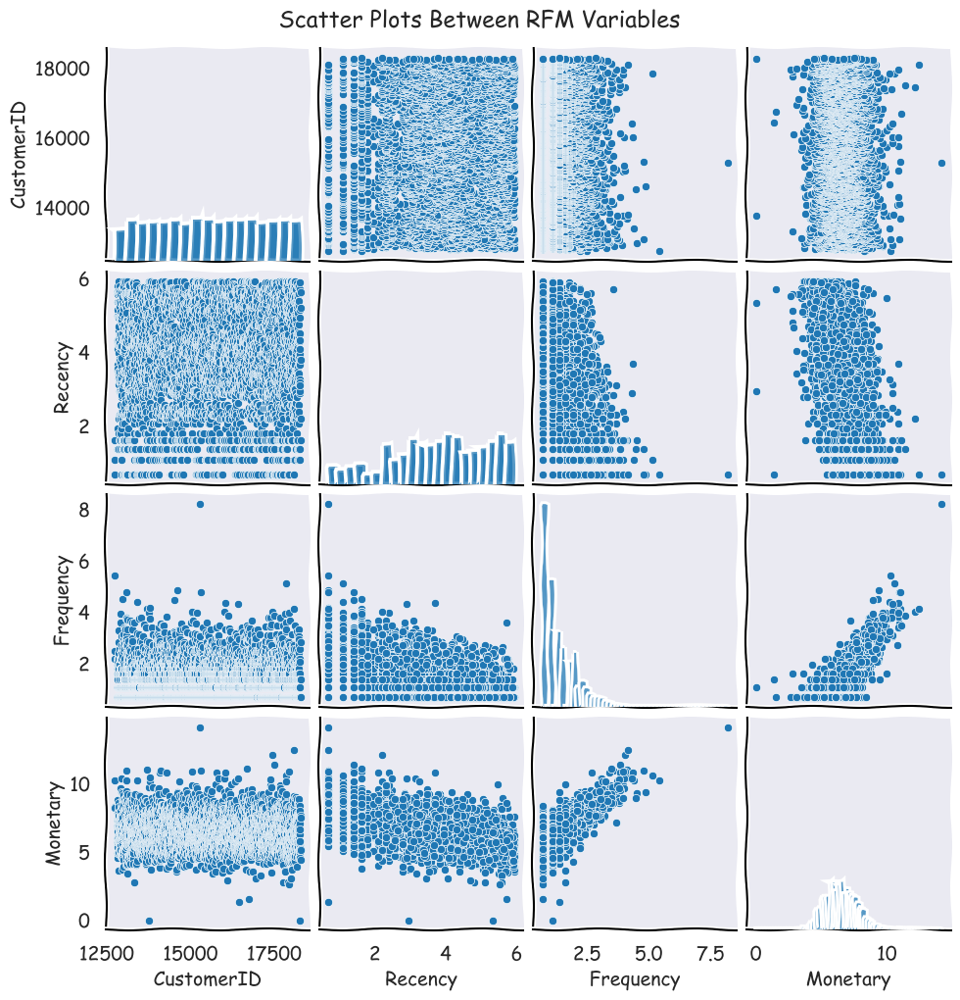
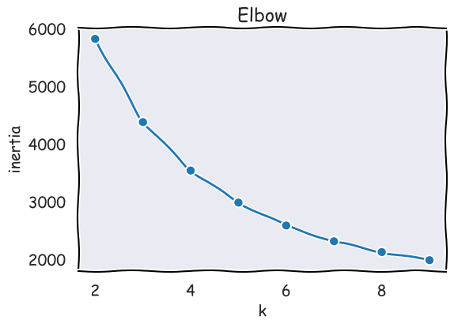
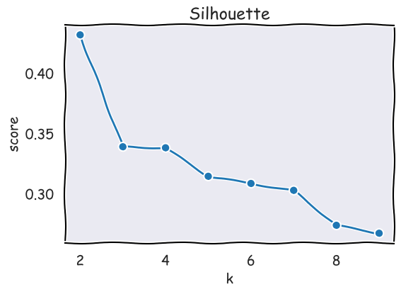
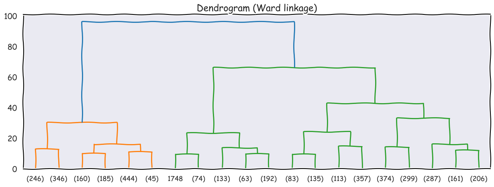
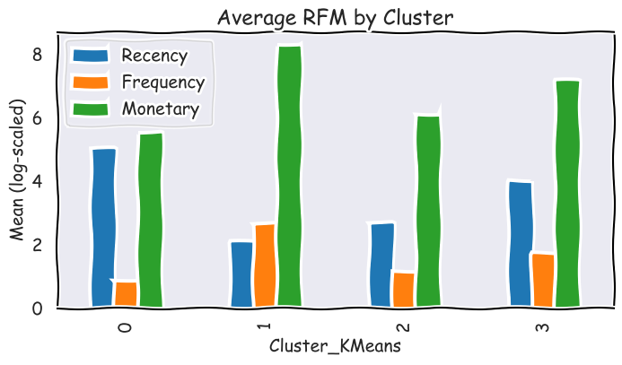

Project 4: Customer Segmentation using Clustering
1. Introduce the Problem
In this project, the goal is to segment customers based on their purchasing behavior using clustering techniques.
Businesses often have thousands of customers, but not all customers behave the same way.
Some buy frequently, others rarely, and some spend much more money than others.
Understanding these different groups (or segments) can help a business create targeted marketing strategies,
improve customer retention, and increase overall revenue.
The main questions I aim to answer are:
- Can we identify distinct customer groups based on their recency, frequency, and monetary value?
- What characterizes each group — for example, which cluster represents “loyal” or “high-value” customers?
- How can these insights help a business make data-driven marketing decisions?
2. What is Clustering and How Does it Work?
Clustering is an unsupervised machine learning technique that automatically groups similar data points together based on their features.
Unlike classification, clustering does not use labeled data — it simply finds patterns in the data itself.
In this project, I used two clustering algorithms: K-Means and Agglomerative Clustering.
1. K-Means Clustering
K-Means is one of the most common and efficient clustering algorithms. It works by dividing the data into k groups based on feature similarity.
- The algorithm randomly selects k cluster centers (called centroids).
- Each data point is assigned to the nearest centroid using a distance measure (usually Euclidean distance).
- The centroids are then updated by calculating the mean of all data points assigned to each cluster.
- Steps 2 and 3 repeat until the centroids stop changing significantly, meaning the model has converged.
2. Agglomerative (Hierarchical) Clustering
Agglomerative Clustering is a type of hierarchical clustering that builds clusters step by step, starting from individual points and merging them into larger groups.
- Initially, each data point is treated as its own cluster.
- The algorithm finds the two most similar clusters (based on a chosen linkage method such as Ward, Complete, or Average linkage).
- Those two clusters are merged into one.
- This process repeats until all points belong to a single large cluster or until a stopping criterion (like a set number of clusters) is reached.
The result can be visualized as a dendrogram, which shows the hierarchical relationships between clusters and helps identify the optimal number of clusters by where to “cut” the tree.
3. Introduce the Data
The dataset used is the
Online Retail Dataset
from Kaggle. It contains transactions from a UK-based online retail store between 2009 and 2011.
- InvoiceNo: invoice number
- StockCode: product ID
- Description: product name
- Quantity: number of items purchased
- InvoiceDate: date and time of the transaction
- UnitPrice: price per item
- CustomerID: unique identifier for each customer
- Country: location of the customer
For clustering, I used three key features derived from RFM analysis:
- Recency: Days since the customer’s last purchase
- Frequency: Number of unique purchases
- Monetary: Total amount spent
4. Data Understanding / Visualization
To better understand the data, I computed RFM values for each customer and visualized their distributions.
Before log-transform

Top Countries With The Most Transactions

Most transactions are from the UK, so we’ll focus on UK customers for consistent segmentation.
5. Pre-processing the Data
- Removed missing values and invalid quantities.
- Aggregated by CustomerID to compute RFM metrics.
- Applied log transformation to reduce skewness.
- Standardized all features using
StandardScaler.
- Verified there were no
NaN values before modeling.
Histograms showed that Recency and Monetary were right-skewed, so a log transformation was applied to normalize the data.
Scatter plots between Recency, Frequency, and Monetary revealed clear separation patterns, for example, customers with high frequency tended to have low recency (recent purchases), while those with low frequency often had high recency and low spending.
This pattern confirmed that RFM features were meaningful for clustering since they naturally group customers by purchasing behavior and value.
After log-transform

Scatter plots

6. Modeling (Clustering)
1. K-Means Clustering
Elbow

The plot shows the "elbow" point where the decrease in Inertia (WCSS) starts to flatten out significantly is at k=4 (or k=3). This indicates that 4 clusters efficiently minimizes the overall variance within the groups, justifying the cluster split.
Silhouette

The Silhouette Score at k=4 (=0.34) is the second-highest score after k=2 (=0.44). Although k=2 has the best separation, the score at k=4 is still reasonably good, suggesting the 4 clusters are fairly well-separated from each other
Both K-Means and Agglomerative clustering were applied, with the elbow and silhouette methods suggesting k=4 as optimal.
K-Means was selected as the primary model because it scales efficiently to larger datasets and works well with continuous numeric variables like log-transformed RFM features.
Cluster Summary(k=4)
| Cluster | Recency | Frequency | Monetary |
|---|
| 0 | 5.01 | 0.86 | 5.51 |
| 1 | 2.07 | 2.65 | 8.27 |
| 2 | 2.68 | 1.16 | 6.08 |
| 3 | 4.01 | 1.72 | 7.16 |
2. Agglomerative (Hierarchical) Clustering
Hierarchical clustering dendrogram

A horizontal cut across the Dendrogram at a moderate distance (e.g., around 25) clearly intersects four major distinct branches.
The hierarchical dendrogram supported the result k=4, showing clear group separation consistent with the K-Means.
7. Storytelling (Clustering Analysis)
The clusters describe four main customer groups:

| Cluster | Behavior Description | Interpretation |
|---|
| 0 | High R, Low F, Medium M | Customers who haven’t purchased recently, buy infrequently, and spend moderately => "At Risk" |
| 1 | Low R, High F, Very High M | Recent, frequent, and high-spending customers => Best / Loyal customers |
| 2 | Medium R, Low F, Medium M | Customers who buy occasionally, moderate spenders => Potential / Regulars |
| 3 | Medium-High R, Low F, Medium-High M | Haven’t bought recently but used to spend a lot => Lost Big Spenders |
Businesses can use these insights to improve marketing:
- marketing on Cluster 1, offer loyalty programs or VIP benefits.
- Cluster 3 with targeted win-back promotions.
- Try to convert Cluster 2 into Cluster 1 by offering consistent-value deals.
- Cluster 0, they might churn soon.
8. Positive impact
- Enables targeted marketing — improves retention & revenue.
- Reduces blanket promotions — saves cost.
- Guides inventory & customer service focus.
Possible negative impact
- Over-targeting — may cause privacy or fairness concerns.
- Poor data quality — could lead to unfair classifications.
- Neglect of low-value customers — businesses might unfairly deprioritize them.